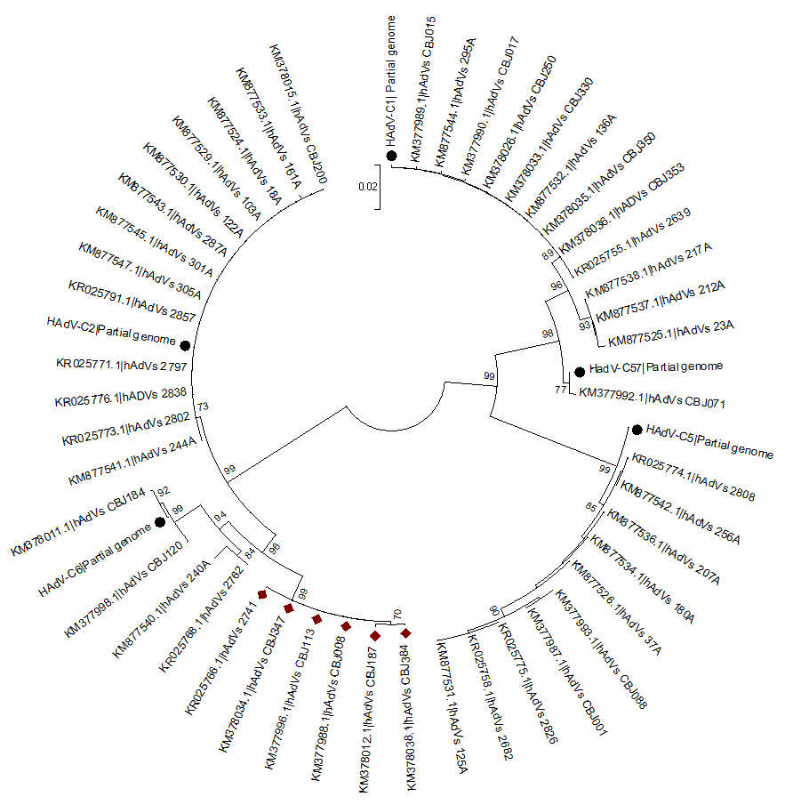

Construcción y análisis de árboles filogenéticos¶
Descripción de los métodos de construcción de árboles filogenéticos utilizados¶
Recapitulando, hemos realizado un alineamiento múltiple que hemos analizado extensamente y hemos determinado que las secuencias están muy conservadas entre sí. A continuación, a partir del alineamiento múltiple y utilizando la función Find Best DNA/Protein Model hemos determinado que K2P+G (Gamma=0,27) es el mejor modelo para realizar el árbol filogenético.
En este apartado, nos vamos a centrar en explotar las diferentes posibilidades de construcción de árboles filogenéticos que tenemos. Bajo mi punto de vista, puesto que K2P+G es el mejor modelo, deberíamos de utilizar para construir nuestro árbol filogenético los métodos basados en distancia y, entre estos, se utilizaría Neighbor-Joining (que además es el utilizado por los autores originales). Neighbor-Joining ofrece como ventaja frente a UPGMA (Unweighted Pair Group Method with Arithmetic Mean) que no genera un dendrograma y, por tanto, en el árbol generado por Neigbor-Joining, las aristas no tienen por qué tener la misma longitud o distancia genética, reflejando de mejor manera la divergencia evolutiva que UPGMA.
Posteriormente, analizaremos los árboles obtenidos por ambos métodos de distancias ya que, aunque den árboles que varíen en la longitud de las aristas, debemos obtener árboles cuya organización de las diferentes secuencias sea la misma; y esto nos aporta robustez al estudio.
Por otra parte, considero de especial interés el realizar un árbol filogenético de acuerdo al método de máxima parsimonia. De esta manera, podremos aprovechar el que las secuencias estén tan conservadas (visto en el apartado anterior) y, así, poder discernir las secuencias ancestrales de los ancestros en común. Asimismo, de la misma manera que la determinación del árbol filogenético por UPGMA, el realizar el árbol filogenético por máxima parsimonia nos deberá servir para dar robustez al estudio filogenético, puesto que la organización de los clados y las secuencias incluidas en cada uno de ellos debe de mantenerse.
Finalmente, apuntar que la bondad de los árboles fue determinada a través del método de Bootstrapping realizando en cada uno de ellos 1000 réplicas. En los posteriores árboles filogenéticos presentados, sólamente se representan los valores de Bootstrap que son mayores de 70.
Análisis y descripción de los diferentes árboles filogenéticos obtenidos¶
Métodos basados en distancia¶
Antes de realizar el árbol filogenético, sería interesante realizar la matriz de distancias según el modelo de Kimura-2P + Gamma = 0,27. Esta tabla de distancias se representa de forma parcial en la tabla 4.
El resto de la tabla puede ser descargada en la sección de material suplementario localizada al final de la sección “Conclusiones”.
La tabla 4 representa por parejas la distancia evolutiva entre las diferentes secuencias (algunas seleccionadas) y, lo más interesante es que esta tabla nos confirma con los bajos valores entre los diferentes pares de secuencias; lo que ya habíamos anticipado en el alineamiento múltiple: el alto grado de conservación y, por tanto, la poca divergencia entre los pares de secuencias.
Table 4. Estimación de la divergencia evolutiva según K2P+Gamma
| Species 1 | Species 2 | Distance |
|---|---|---|
| KR025776.1|hADVs 2838 | KR025773.1|hAdVs 2802 | 0.000 |
| KR025776.1|hADVs 2838 | KR025771.1|hAdVs 2797 | 0.000 |
| KR025773.1|hAdVs 2802 | KR025771.1|hAdVs 2797 | 0.000 |
| KR025776.1|hADVs 2838 | KR025755.1|hAdVs 2639 | 0.140 |
| KR025773.1|hAdVs 2802 | KR025755.1|hAdVs 2639 | 0.140 |
| KR025771.1|hAdVs 2797 | KR025755.1|hAdVs 2639 | 0.140 |
| KR025776.1|hADVs 2838 | KM378036.1|hADVs CBJ353 | 0.140 |
| KR025773.1|hAdVs 2802 | KM378036.1|hADVs CBJ353 | 0.140 |
| KR025771.1|hAdVs 2797 | KM378036.1|hADVs CBJ353 | 0.140 |
| KR025755.1|hAdVs 2639 | KM378036.1|hADVs CBJ353 | 0.000 |
| KR025776.1|hADVs 2838 | KM378035.1|hAdVs CBJ350 | 0.140 |
| KR025773.1|hAdVs 2802 | KM378035.1|hAdVs CBJ350 | 0.140 |
| KR025771.1|hAdVs 2797 | KM378035.1|hAdVs CBJ350 | 0.140 |
| KR025755.1|hAdVs 2639 | KM378035.1|hAdVs CBJ350 | 0.000 |
| KM378036.1|hADVs CBJ353 | KM378035.1|hAdVs CBJ350 | 0.000 |
| KR025776.1|hADVs 2838 | HAdV-C6|Partial genome | 0.032 |
| KR025773.1|hAdVs 2802 | HAdV-C6|Partial genome | 0.032 |
| KR025771.1|hAdVs 2797 | HAdV-C6|Partial genome | 0.032 |
| KR025755.1|hAdVs 2639 | HAdV-C6|Partial genome | 0.166 |
| KM378036.1|hADVs CBJ353 | HAdV-C6|Partial genome | 0.166 |
| KM378035.1|hAdVs CBJ350 | HAdV-C6|Partial genome | 0.166 |
| KR025776.1|hADVs 2838 | HadV-C57|Partial genome | 0.125 |
| KR025773.1|hAdVs 2802 | HadV-C57|Partial genome | 0.125 |
| KR025771.1|hAdVs 2797 | HadV-C57|Partial genome | 0.125 |
| KR025755.1|hAdVs 2639 | HadV-C57|Partial genome | 0.017 |
| KM378036.1|hADVs CBJ353 | HadV-C57|Partial genome | 0.017 |
| KM378035.1|hAdVs CBJ350 | HadV-C57|Partial genome | 0.017 |
| HAdV-C6|Partial genome | HadV-C57|Partial genome | 0.161 |
| KR025776.1|hADVs 2838 | HAdV-C5|Partial genome | 0.144 |
| KR025773.1|hAdVs 2802 | HAdV-C5|Partial genome | 0.144 |
| KR025771.1|hAdVs 2797 | HAdV-C5|Partial genome | 0.144 |
| KR025755.1|hAdVs 2639 | HAdV-C5|Partial genome | 0.096 |
| KM378036.1|hADVs CBJ353 | HAdV-C5|Partial genome | 0.096 |
| KM378035.1|hAdVs CBJ350 | HAdV-C5|Partial genome | 0.096 |
| HAdV-C6|Partial genome | HAdV-C5|Partial genome | 0.190 |
| HadV-C57|Partial genome | HAdV-C5|Partial genome | 0.097 |
| KR025776.1|hADVs 2838 | HAdV-C2|Partial genome | 0.000 |
| KR025773.1|hAdVs 2802 | HAdV-C2|Partial genome | 0.000 |
| KR025771.1|hAdVs 2797 | HAdV-C2|Partial genome | 0.000 |
| KR025755.1|hAdVs 2639 | HAdV-C2|Partial genome | 0.140 |
| KM378036.1|hADVs CBJ353 | HAdV-C2|Partial genome | 0.140 |
| KM378035.1|hAdVs CBJ350 | HAdV-C2|Partial genome | 0.140 |
| HAdV-C6|Partial genome | HAdV-C2|Partial genome | 0.032 |
| HadV-C57|Partial genome | HAdV-C2|Partial genome | 0.125 |
| HAdV-C5|Partial genome | HAdV-C2|Partial genome | 0.144 |
| KR025776.1|hADVs 2838 | HAdV-C1| Partial genome | 0.143 |
| KR025773.1|hAdVs 2802 | HAdV-C1| Partial genome | 0.143 |
| KR025771.1|hAdVs 2797 | HAdV-C1| Partial genome | 0.143 |
| KR025755.1|hAdVs 2639 | HAdV-C1| Partial genome | 0.001 |
| KM378036.1|hADVs CBJ353 | HAdV-C1| Partial genome | 0.001 |
| KM378035.1|hAdVs CBJ350 | HAdV-C1| Partial genome | 0.001 |
| HAdV-C6|Partial genome | HAdV-C1| Partial genome | 0.169 |
| HadV-C57|Partial genome | HAdV-C1| Partial genome | 0.019 |
| HAdV-C5|Partial genome | HAdV-C1| Partial genome | 0.098 |
| HAdV-C2|Partial genome | HAdV-C1| Partial genome | 0.143 |
Procedemos a continuación a realizar los árboles filogenéticos correspondientes.
{kind=link}
{kind=link}
Métodos basados en distancia: Neighbor-Joining¶
Realizamos en primer lugar el árbol filogenético basado en distancias según Neighbor-Joining, puesto que, además de por las razones aportadas al inicio del apartado, es el método que realizan los autores del artículo en cuestión.
Los genomas de referencia de cada uno de los subtipos de HAdV-C, a los que se les ha extraído por alineamiento múltiple y de forma individual las secuencias C-terminal del hexón para construir el árbol filogenético, están marcadas con un círculo relleno color negro. El rombo relleno de color granate está marcando unas secuencias determinadas que corresponden a un mismo clado que identifica a un nuevo serotipo de HAdV-C, como será descrito posteriormente en el análisis pormenorizado de cada clado.
Observamos como las diferentes muestras extraídas de los pacientes se identifican respectivamente con un clado determinado en el que se puede identificar, en cada uno de ellos, el serotipo de referencia.
- Es plausible, por tanto, formular la hipótesis que aquellos clados que presentan mayor número de muestras que el resto corresponden a serotipos que tienen mayor tendencia que los otros serotipos de HAdV-C a infectar niños y a provocar la enfermedad respiratoria aguda. En concreto, nos referimos a los siguientes serotipos:
- HAdV-C2
- HAdV-C5
- HAdV-C1
{kind=link}
Una de las razones posibles por las que ciertos serotipos son encontrados en niños con SARI en mayor proporción que otros es que estos serotipos tienen mayor tendencia a mutar que el resto de serotipos, lo cual le proporcionaría una ventaja evolutiva frente a los anteriores, ya que podrían evadir el sistema inmunitario del huésped con mayor facilidad y, de la misma manera, aumentar las posibilidades de infección porque el tropismo que presentan podría ser más amplio (al tener mayor capacidad mutagénica, pueden experimentar mutaciones de superficie que reconozcan una mayor variedad de receptores).
Finalmente, me gustaría resaltar la necesidad de contrastar el árbol filogenético obtenido por Neighbor-Joining a través de Kimura 2-parámetros como modelo de sustitución con otro árbol filogenético realizado a través de Neighbor-Joining utilizando el modelo de TN93+G (G=0,29), que corresponde al tercer mejor modelo de sustitución obtenido según la función Find Best DNA Model de Mega 7. Con esto conseguiremos demostrar que la agrupación de las secuencias en los distintos clados es independiente del modelo de sustitución empleado.
Este árbol puede ser descargado como material suplementario a través de un enlace que será incluido en la sección correspondiente encontrada al final del apartado Conclusiones.
Como podemos observar en la imagen de la derecha donde se ve el árbol descrito, se confirma que, efectivamente, obtenemos el mismo tipo de árbol filogenético utilizando Neighbor-Joining y TN93+G que utilizando Neighbor-Joining y Kimura-2P.
A continuación, pasamos a analizar los diferentes clados:
Serotipo HAdV-C1
{kind=link}
Este serotipo es uno de los principales que podemos encontrar en los pacientes pediátricos pediátricos con SARI. En este estudio, se han recogido doce secuencias variantes del hexón que se considera del serotipo HAdV-C1. Es decir, las proporción de variantes de HAdV-C1 que causan SARI en pacientes pediátricos corresponde a 27,9 % (12 de las 43 muestras recogidas).
En cuanto al árbol extraído y que corresponde únicamente al serotipo HAdV-C1, es reseñable afirmar que la evolución que ha experimentado cada una de las diferentes cepas de HAdV-C1 es similar entre ellas. Sin embargo, lo que resulta más interesante es que podamos distinguir dos clados que se han originado a partir de un ancestro común: el clado de HAdV-C1 y otro clado de características muy similares a HAdV-C1 y que no presenta la secuencia del serotipo de referencia.
Serotipo HAdV-C2
{kind=link}
El clado del serotipo HAdV-C2 engloba un gran conjunto de secuencias, lo cual nos indica que es el serotipo que más probablemente encontraremos en un individuo pediátrico con SARI infectado por HAdV-C, junto con el serotipo HAdV-C1. Las variantes del serotipo HAdV-C2 se encuentran en 13 muestras de las 49 recogidas, lo que hacen un porcentaje de 30,23% de pacientes con SARI infectados por este serotipo.
Si analizamos el clado por separado extraído del árbol filogenético, lo que más rápidamente podremos observar es que una de las secuencias (KM877533) ha experimentado una gran divergencia respecto al resto de secuencias de HAdV-C2 puesto que la distancia hacia el clado del ancestro en común es muy superior al resto de secuencias. En cuanto al resto de secuencias, es reseñable afirmar que presentan un grado de divergencia similar.
{kind=link}
Serotipo HAdV-C5
El serotipo HAdV-C5 es el tercer serotipo más prevalente en pacientes pediátricos con SARI con una prevalencia de un 23,25%. Como vemos, los serotipos C1, C2 y C5 son los principales causantes de SARI en pacientes pediátricos en esta población, siendo encontrados los mismos en 35 de 45 muestras recogidas, lo que supone un 77,78%.
Observando más en detalle el clado del serotipo HAdV-C5, podemos observar como todas las cepas encontradas en los pacientes pediátricos se han desarrollado directamente por divergencia con el serotipo principal (HAdV-C5) puesto que desde HAdV-C5 parte una arista que da lugar a un nodo, un ancestro en común, a partir del cual se han desarollado y se han originado el resto de cepas.
{kind=link}
Serotipo HAdV-C57
Únicamente encontramos una muestra positiva para presencia de HAdV-C57 en pacientes pediátricos con SARI. La prevalencia de este serotipo es realmente poco frecuente en las muestras recogidas, con un 2.33% o, lo que es lo mismo, una proporción de 1 afectado por HAdV-C57 de 43 muestras recogidas.
Existen tres razones posibles principalmente que explicarían la baja proporción. Por una parte, este hecho podría deberse a que el serotipo C57 no estaría adaptado en absoluto a humanos y, por esta causa, no podría provocar infección. Por otra parte, la baja prevalencia del serotipo C57 podría deberse a que, sencillamente, la infección de C57 en humanos no afecta a niños o bien no produce SARI, generalmente; de manera que, en cualquiera de estos supuestos, no podría detectarse puesto que las muestras han sido obtenidas de pacientes pediátricos con SARI. Finalmente, otra de las causas podría ser el hecho de que el serotipo HAdV-C57 no fuera bien caracterizado, es decir, no sería detectado por limitaciones técnicas y analíticas.
{kind=link}
Serotipo HAdV-C6
El serotipo HAdV-C6 no es muy prevalente en las muestras aquí recogidas, siendo encontrado encontrado en 4 de 43 muestras; lo cual significaría una prevalencia de 9,3%.
Si observamos en detalle el clado del serotipo C6, podremos apreciar cómo el clado está dividido en dos grupos bien diferenciados, un clado (el formado por KM877540 y KR025768) comparte un ancestro en común que es diferente al clado donde se encuentra C6. A su vez, el clado donde se encuentra HAdV-C6 presenta un ancestro en común del cual surgió la arista de KM377998 y un ancestro en común del que, ahora sí, surgió por evolución HAdV-C6.
Es decir, este clado es muy interesante, porque el que consideramos como el genoma de referencia para el serotipo, está localizado en otro clado separado y, como apreciamos en el árbol, a partir del mismo no se han originado todos los HAdV considerados en este grupo.
Serotipo HAdV-Cnew(nuevo serotipo)
{kind=link}
Este clado resulta de gran interés y se encuentra en 6 de 43 muestras teniendo, por tanto, una prevalencia de 13,95% en pacientes pediátricos con SARI. Pese a no ser una prevalencia demiasiado elevada, hay que tener en cuenta que no encontramos en el clado ninguna secuencia que pertenezca a un serotipo concreto de HAdV-C, que son las que hemos introducido.
El árbol filogenético presentado a la izquierda recoge también al serotipo C6 con el objetivo de poner de manifiesto que, realmente, este nuevo serotipo se localiza en un clado totalmente diferente, cuyo ancestro en común (en la proteína del hexón) fue compartido con el serotipo C6.
Como consecuencia, podemos definir la existencia de un nuevo serotipo de HAdV-C capaz de infectar a individuos pediátricos y producir SARI en China.
La identificación de un nuevo serotipo con el análisis filogenético realizado con la proteína del hexon del virus es poco consistente, puesto que es posible que estas cepas se hayan originado a partir de un ancestro en común cuya proteína del hexón proceda de otra subespecie de adenovirus y, como consecuencia, den lugar a un clado aislado no relacionado con ningún serotipo de HAdV-C. Es por ello que, con el mero objetivo de confirmar la existencia del nuevo serotipo de HAdV-C y establecer la relación filogenética del mismo con el resto de especies y subespecies de Mastadenovirus, se ha realizado un árbol filogenético con los genomas completos de 12 HAdV, incluyendo todos los serotipos de la subespecie HAdV-C y otras subespecies.
{kind=link}
El árbol en cuestión es el presentado a la izquierda. Ha sido realizado con el modelo de sustitución Tajima-Nei (que es el modelo de sustitución determinado como el mejor a través de la función Find Best DNA Model de Mega 7) a través del método de Neighbor-Joining y se ha determinado la bondad del árbol con un Bootstrap de 1000.
El análisis filogenético de las secuencias completas demuestra que, realmente, se ha identificado una nueva cepa de HAdV-C, formando un nuevo subclado dentro del clado constituido por HADV-C y el serotipo C2.
El material utilizado para la determinación del árbol filogenético con las secuencias completas está incluido en los archivos de material suplementario que podemos encontrar al final del apartado “Conclusiones”.
Métodos basados en distancia: UPGMA¶
El propósito de este apartado consiste en realizar el árbol filogenético con este otro método basado en distancia, UPGMA, utilizando también como modelo de sustitución Kimura 2-parámetros, para así aportar robustez al árbol filogenético obtenido de acuerdo a Neighbor Joining.
Puesto que los distintos clados ya han sido discutidos ampliamente en el apartado anterior con el árbol de referencia utilizado en el artículo original, en este apartado vamos a obviar esta parte y nos centraremos en presentar el árbol filogenético según UPGMA y compararlo con el obtenido según Neighbor Joining en vistas de comprobar si presenta unos clados lo más similares posibles, lo que significará que el árbol filogenético será lo suficientemente robusto como para extraer las conclusiones.
{kind=link}
El árbol realizado acorde UPGMA se ha realizado con los parámetros por defecto, utilizando K2P+G como modelo de sustitución y con un bootstrap de 1000, al igual que el árbol realizado con Neighbor Joining. Como podemos observar si comparamos ambos árboles, pese a que en el obtenido con UPGMA presenta unas aristas que no reflejan la distancia genética real, debido a la propia naturaleza del método; las secuencias que podemos encontrar en cada uno de los diferentes clados son las mismas e, incluso, en muchos clados se conserva el orden de aparición que encontramos en UPGMA.
Método basado en máxima parsimonia¶
{kind=link}
Debido al gran grado de conservación que se encuentra entre las diferentes secuencias del hexon de HAdV-C obtenidas, es plausible pensar en utilizar como método basado en máxima parsimonia para la construcción de árbol filogenético del árbol filogenético.
En el artículo original, ni siquiera se plantea la utilización de este método, probablemente porque determinar la secuencia original no es un objetivo prioritario. Sin embargo, bajo mi punto de vista, resultaría interesante aprovechar la conservación y poder inferir con un alto grado de certeza una relación filogenética clara en el que se puedan ver parte de los cambios que han experimentado las secuencias en su evolución.
El árbol generado a través del método de máxima parsimonia se puede observar a la derecha de esta subsección y ha sido realizado utilizando un bootstrap de 1000 réplicas. De la misma manera que en el árbol anterior, hemos señalado las secuencias de referencia con un círculo relleno de color negro, mientras que las secuencias que corresponden al nuevo serotipo identificado está marcado con un rombo relleno de color granate.
Como podemos observar, realizando el análisis filogenético a través del método de máxima parsimonia, un modelo independiente de las distancias y que trata de inferir las diferentes secuencias ancestrales para determinar los diferentes clados y el orden evolutivo, obtenemos el mismo tipo de árbol en el que se mantienen constantes los diferentes clados, pudiendo encontrar en el interior de cada uno de ellos las mismas secuencias que habíamos obtenido por el método de construcción de árboles de Neighbor-Joining y aportando aún mayor robustez al árbol filogenético obtenido.